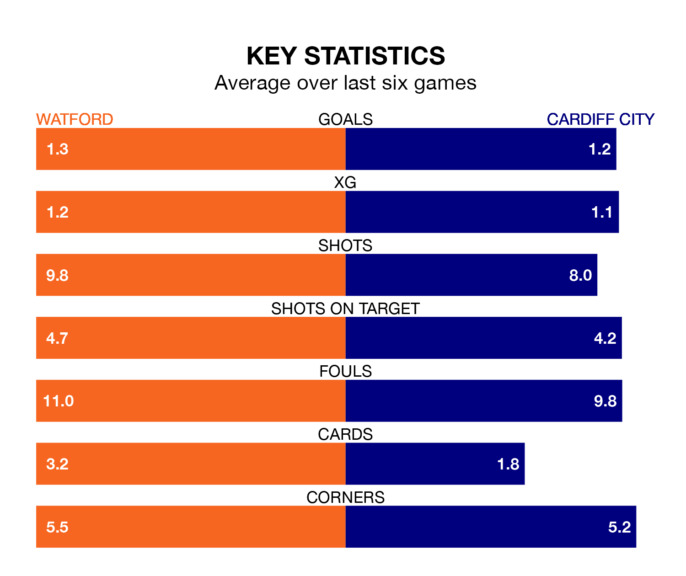

Watford face Cardiff City on Saturday seeking to protect their long unbeaten run in EFL Championship.
The Hornets are unbeaten in five, with one win and four draws, ahead of the 3pm kick-off.
They face a Cardiff team who have won just one and drawn one over the same number of games.
With 45 goals in 29 games so far this season, Watford are scoring more than average in the league with 1.6 goals per game. And they are conceding fewer than average, letting in 38 goals at a rate of 1.3 per game.
Cardiff, meanwhile, are below average scorers, with 1.2 goals per game, compared to a league average of 1.4. They have conceded 1.4 goals per game.
In the last 10 years, Watford and Cardiff have played each other on nine occasions. Watford won five of them, Cardiff three, and they drew once.
On average, the Hornets scored 2.0 goals and the Bluebirds 1.4 in those matches.
Their last meeting was on October 7, when they played out a 1-1 draw.
The Hornets are ninth in the table after 29 games, of which they have won 10 and drawn 11, earning 41 points.
City are five places behind the home team in 14th, with 11 wins and four draws putting them on 37 points.
Watford's last match was on Wednesday, a 0-0 draw against Sheffield Wednesday.
Cardiff lost 3-1 against Plymouth Argyle last time out, on January 20, with Perry Ng on the scoresheet.
Saturday's match will be refereed by James Linington, who has taken charge of 15 EFL Championship games so far this season, issuing one red card and booking 68 players. He has awarded five penalties.
He is yet to oversee a match featuring either Watford or Cardiff this season.
Updated: 15:45 (UTC), 02/02/24